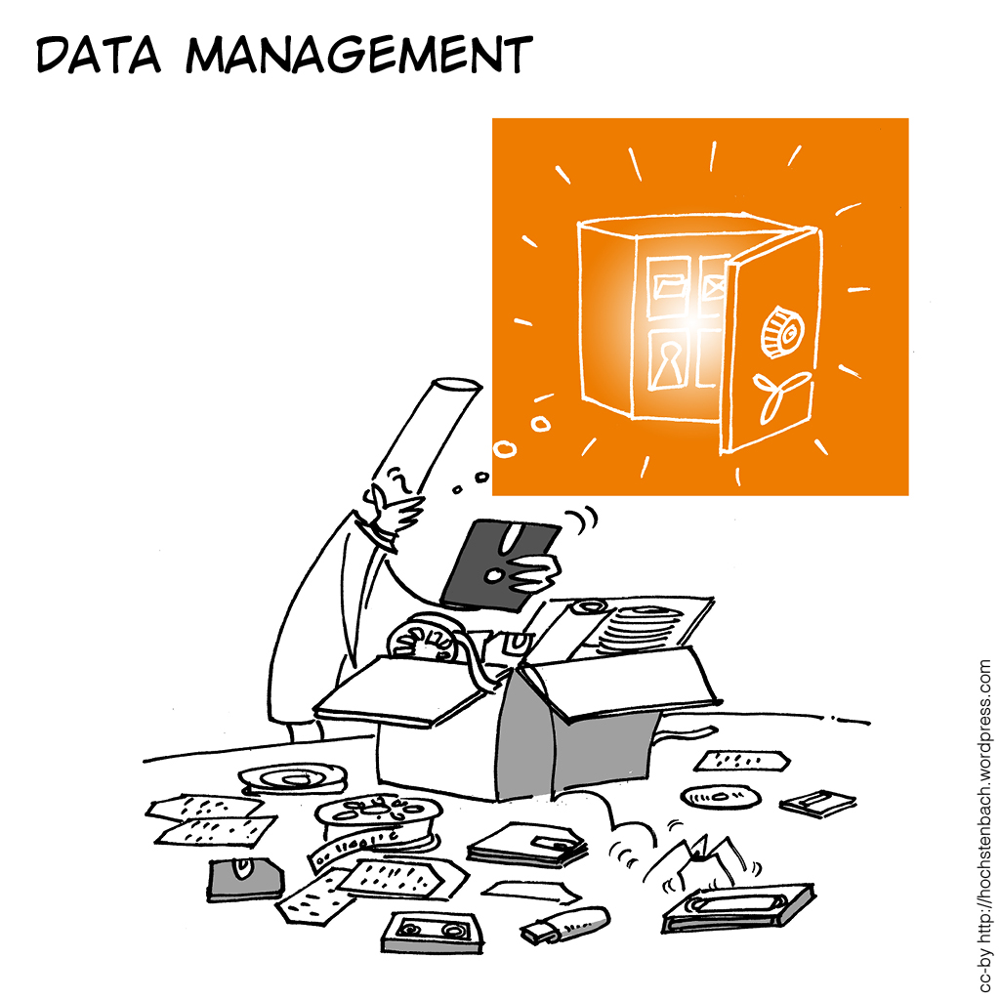

Tactical Tech Show
— tools, technologies, concepts —
Research Data
& Software Training Series — 2020-01-30

Feedback
Point your device to https://pollev.com/actionlake240

- Agree to cookies
- If asked for login: "skip"
- Answer first question:
Empa or Eawag?
Scripting & Programming
R, Python and Julia
Which one?
- R
- statistics, data wrangling, non-NN related ML, visualization, high quality packages, "friendly" ecosystem
- Python
- data wrangling, visualization, NN related ML, beginner-friendly, extremely versatile
- Julia
- very fast, own simulation codes, matrix algera, numerical solvers, differential equations (h/t Andreas)
What is everybody else in
your lab and in your field using?
Python
Python 2 versus Python 3
- Incompatible!
- ... but lots of help to port from 2 to 3
- Use Python 3 unless you need legacy packages
Python
Python packages you need to learn
- numpy
- Fundamental package for scientific computing: matrices (arrays), linear algebra
- pandas
- Fundametal package for data analysis: Data Frame (similar to R) and Time Series. Data sorting & preparing.
- plotnine
- Recommended for visualization. A clone of R's ggplot2. Traditional alternative: Matplotlib/Seaborn.
Python
Python packages for ML / AI
Python is "industry-standard" when it comes to ANN, CNN, RNN, GAN, ..., "deep-anything".
- scikit-learn
- Classical statistics & ML: regression, classification, clustering, decision-trees, validation, SVM, EOF, ...
- Caffe
- Fast CNN framework by Berkeley AI Research Lab.
- PyTorch
- Deep Learning Framework by Facebook
- Keras + TensorFlow
- Keras is a deep learning high-level interface on top of TensorFlow (or others) by Google.
Python
PIC HERE
Python IDEs
- Spyder
- PyCharm
- VSCodium
- JupyterLab
PIC HERE
R packages you need to learn
The Tidyverse
- dplyr,
- ridyr,
- tibble,
- ggplot2, ...
Modern packages for "Data Science" (Hadley Wickham)
R goodies
- Find R packages
- CRAN Task Views : https://cran.r-project.org/web/views
- The R IDE
- RStudio Desktop
- Web-based interactive visualizations
- Shiny. Example: ExPanD. Also a cloud service.
- knitr
- Dynamic report generation, literate programming
Coding Tips
Steps towards better code
- A script without structure.
- Code is for humans: Comment and structure into sections!
- DRY, generalize: Write functions!
- Make code re-usable: Write a library!
- Get rid of hard-coded parameters: Make scripts take arguments -> docopt
- Read a book: The Pragmatic Programmer
{kind=link}
Version control
Learn Git!
- Looks intimidating at first
- Once you know the important parts, it becomes easy.
- There will be courses.
- Put your stuff on GitHub (gitlab.switch.ch, framagit.org, bitbucket.org, ...)
- No Shame! Nobody reads your code anyway.
- Everybody lokks whether you have some.
Version control
Why Git?
- It is the de-facto standard today and the most powerful option.
- A lot of infrastructure and workflows are connected with Git repositories.
- Workshop: "clone this repos,please"
- Open Source collaboration
- Continuous Integration tools
- There will be courses.
- Put your stuff on GitHub (gitlab.switch.ch, framagit.org, bitbucket.org, ...)
- No Shame! Nobody reads your code anyway.
- Everybody lokks whether you have some.
Python 2 vs. Python 3
ERIC/internal
- Since March 2016:
requirement elicitation, development, testing, available for researchers - April 2018: "public" beta
- January 2019: operational as core service
- January 2019:
"Directive on the archiving of research data at Eawag"
ERIC/internal
- Only accessible from within the Eawag network
- Live Demo: https://data.eawag.ch


ERIC/internal
Publication Data Package
- Associated with one publication
- Strongly required by Eawag policy.
- Package creation is streamlined -- every researcher can do it.
- Is often also Open Research Data.
- Link(s) to the publication in the metadata.
- Guidance document are available:
General Data Package
- Mostly associated with one workgroup / lab.
- Often only internal.
- Often many and/or large files.
- Requires individual consulting. Support intensive.
- Impacts organization / workflows of data management within labs.
- Scripts are available or custom tailored to ease package creation (e.g batch-upload, automatic metadata-generation, renaming).
Tech Stack
 The world’s leading Open Source
data portal platform.
The world’s leading Open Source
data portal platform. Written in
Python.
Written in
Python.
Standard building blocks.- Very large number of deployments worldwide.
- Extensible through plugin-architecture.
- Very powerful API.
- Excellent documentation
- Competent & helpful core team & community
- Battle tested
ERIC/open
Since November 1, 2019:
https://opendata.eawag.ch
https://opendata.eawag.ch
- Same system. But completely independent (Webapp, SOLR, Postgres, Storage)
- No ingress, no users.
- In the process of being populated.
- Every package has a DOI (still pointing to Zenodo, mostly).
- Completely dockerized
- Latest CKAN version


TODO
Technical Challenges
- ORCID integration
- Dora synchronization / paper tracking
- Versioning
- ERIC/i <-> ERIC/o autosync
- Statistics (Make Data Count)
- S3 storage backend
- bulk download
- refactoring, deployment polish, towards turnkey solution
- ...
- RDM Control
Cultural/Challenges
- Adoption: Mixed experiences
- Young researchers are more enthusiastic than established ones
- Open Data is a major motivator
- Work to prepare data is underestimated
- Curation: Large & unsolved
- Know-how dissemination about data preparation
- Appointment of Data Managers
Support/Activities
- Guidance material / documentation
- Workshops
- DMP workshops
- Git workshops
- Tactical Tech workshop (Ipython, VMs, Docker, programming basics / tools, useful software, ...)
Support/Activities
- Individual Support (core RDM), e.g.
- Large volume data transfer (we no have sftp!)
- Field collection (Kobotools, Excel-Advice)
- Laptop encryption
- Data organization for projects
- Extended Support (-> "scientific programming"), e.g.
- Web-App development / deployment (VM, SWITCH)
- SIS - Liaison (contracting)
- IT admin work, e.g. storage administration and planning.
Opportunities
- Collaborations / synergies with other intitutions / groups
- Repository: WSL / EnviDat
- WSL: Workshops / Lectures / possibly OpenBIS in the future
- Documentation / Guides: potentially with everybody
- Idea: RDM initiatives of various ETH Domain entities should formalise their cooperation.
Questions?
